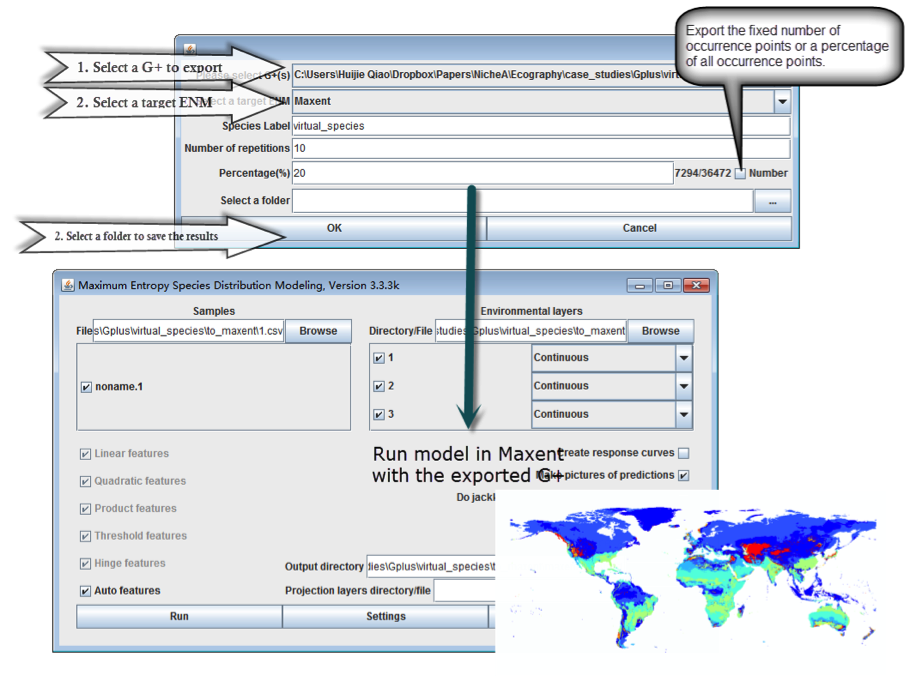
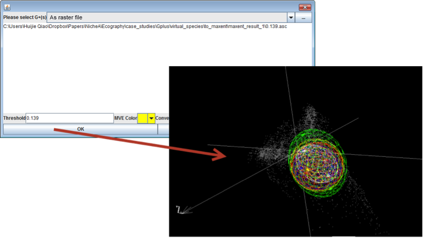

Observe ENM results in E space, and display ENM results with different thresholds.
Note:
The data used in this case study can be downloaded via this link.
1. Interacting with other ENMs
For user convenience, NicheA can export Ns in formats compatible with Maxent and openModeller. The entrance of this function is under "File" menu, which is named as "Export to ENMs". Additionally, NicheA can open results from these two ENM software in E with a given threshold for distinguishing between presence and absence. This function can help users to analyze relationships between occurrences used for modeling and results based on those occurrences. Fig. 1 outlines the process.Figure 1. Export N to Maxent and make a model with Maxent.

2. Display ENM results with different thresholds.
In this case, we used the result generated from Maxent above.
Note:
We can’t open the same raster file twice. The only solution is to make a copy of the raster file, and open it.
Figure 2. Open an ENM result with different thresholds.
The thresholds were ‘10 percentile training presence’ (red), ‘Equal training sensitivity and specificity’ (blue), ‘Maximum training sensitivity plus specificity’ (yellow) and ‘Balance training omission, predicted area and threshold value’ (green). The white ellipsoid was the original N.
